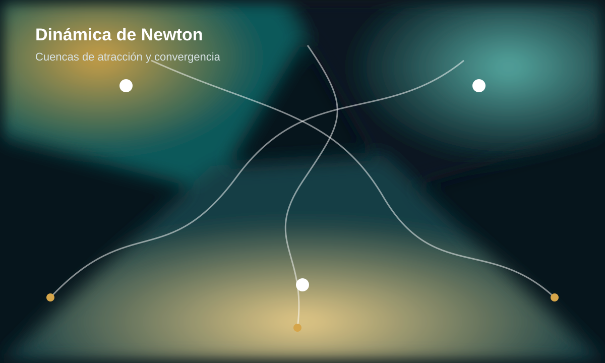

Línea 1
Métodos iterativos para sistemas no lineales
Diseño y análisis de métodos numéricos para resolver ecuaciones y sistemas no lineales, considerando convergencia, estabilidad y eficiencia computacional.